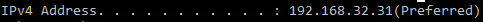

INTRODUCTION
We aim to understand how computers are connected to each other that is why it is essential that we should be familiar with the different devices found in the workplace to perform network connectivity.
It is important to understand that each workplace has a unique plan/map of how the organization distributes information and who has access.
This lesson's goal is to simply familiarize ourselves with the different network devices which we will get to connecting later.
Basically, a local area network, called as LAN, is a group of computers and connected devices that share a common communication line (or may be wireless) to a server.
A LAN is where computers and mobile devices may share resources like printers, scanners, storage, etc.
Local Area Connection Properties
To make sure that your LAN works properly, make sure that the following items are installed and enabled in the Local Area Connection Properties:
Clients For Microsoft Networks
Allow your computer to share files and printers in Microsoft Network.
Internet Protocol Version 4 (TCP/IPv4)
The protocol that enables the computer to communicate with other computers in the network. This can be set automatically or manually specified along with another network information to work properly. Make sure however that each device has a unique IP.
LAN Settings
These are specific IP settings for the LAN interface.
The default IP Address is 192.168.0.1.
The default Subnet Mask is 255.255.255.0.
DHCP Server
Stands for Dynamic Host Control Protocol. This gives the IP Addresses when a device starts and requests an IP address from the network. It can be set to obtain IP address automatically.
Home Network
This type is ideal for home networks where you trust all the people and the devices using the network. By default, network discovery is turned on, allowing you to see other computers and devices, and others can see you as well.
Work Network
This type is used in small office or other workplace networks. By default, network discovery is enabled allowing other computers on a network. However, you cannot join or create a homegroup.
Public Network
This type is the safest. This is designed to keep your computer from being visible to others and helps protect your computer from malicious software from the Internet. However, network discovery is turned off and homegroup is not available on this network.
Domain Network
This is used for domains and at enterprise networks. This is controlled by the network administrator.
Also known as WAN. This is a collection of computers and networks connected via a network just like the LAN. However, in WAN, it is connected over a large geographic area.
The following are the WAN settings used to connect to the Internet Service Provider (ISP):
- Dynamic IP Address
- This is to obtain an IP address automatically from the ISP.
- Host Name
- This is optional. Usually, this is the model number of the device.
- MAC Address
- This is optional. MAC stands for Media Access Control. The MAC Address is set by default to the MAC Address of the WAN interface in the device.
- Primary DNS Address/ Secondary DNS Address
- This is optional. A Domain Name Server (DNS) is entered. If left blank, the ISP provides the DNS address.
- Auto-Reconnect.
- This feature allows the router to reconnect to the ISP automatically if connections is disconnected.
Static IP Address
This is to set a specific IP Address that is still provided by the ISP. However, this is avoided because this requires a lot of work and manual entry of network information.
PPPoE
Stands for Point-to-Point Protocol over Ethernet. Only used if the ISP uses this protocol. The ISP provides the username and password.
IP Addressing
IP Address, or the Internet Protocol Address, is a numerical label assigned to a device within a computer network that uses the Internet Protocol. It has two functions: (1) network hosting ; and (2) location addressing.

The IPv4 is still in use today. It is a 32-bit number system.
On the other hand, a new version of Internet Protocol called the IPv6 makes use of 128 bits for its address. (e.g. 2001:db8:0:1234:0:567:8:1)